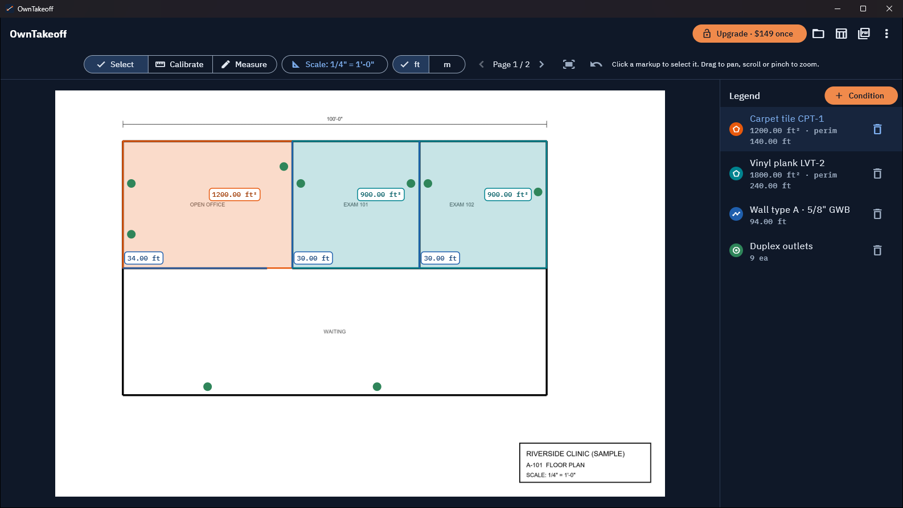
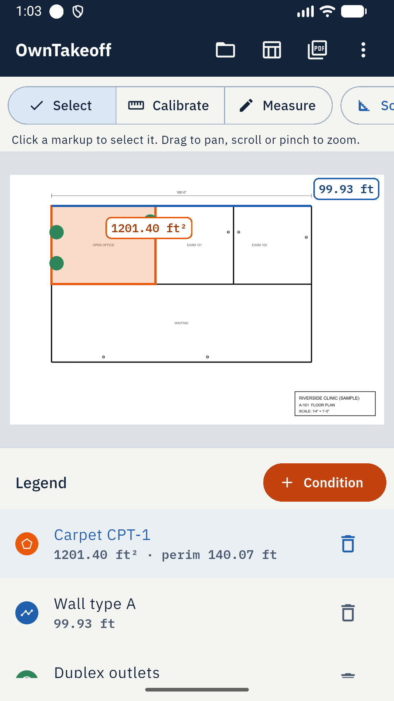

What you can do
Set any scaleArchitectural, engineering and metric presets, or calibrate from a known dimension.
Measure three waysLength, area with perimeter, and counts, with totals updating as you click.
Organise by conditionOne colour per item you price, with running totals across every page.
ExportCSV for Excel, plus a marked-up PDF with a legend for the GC or your crew.
Stays on your machineNo account, no cloud upload. Works offline.
Buy onceWindows Pro is $149 one-time, 2 computers per key. Android is free with ads.
See it

